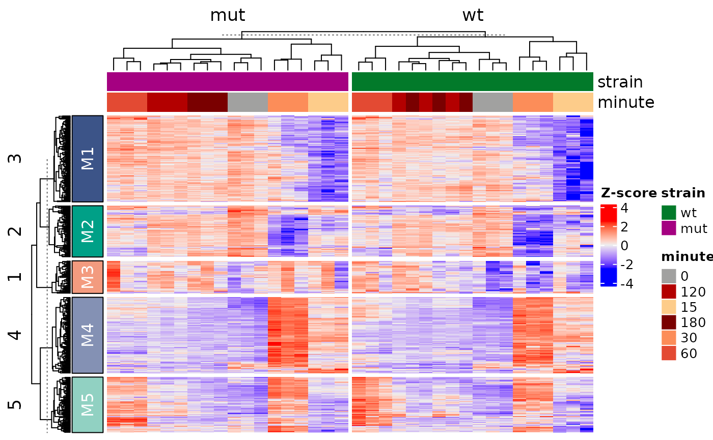
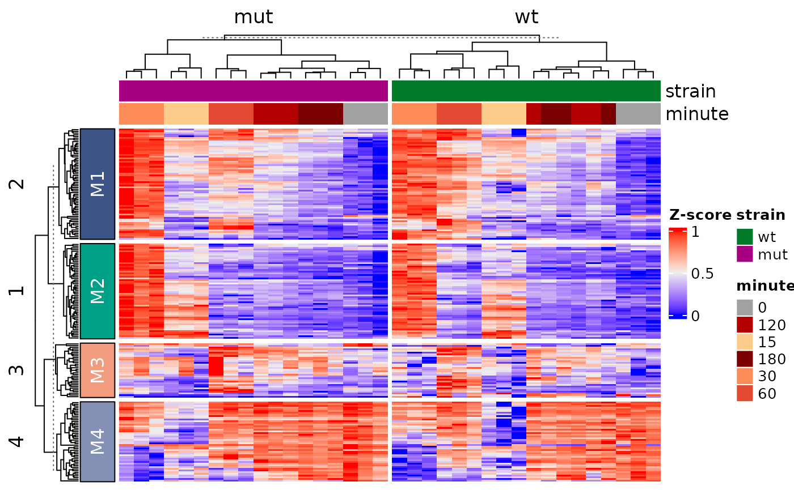
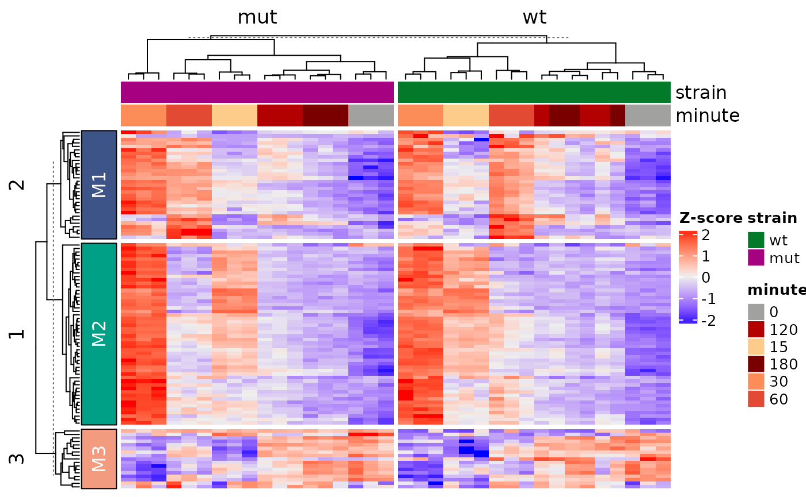

Introduction
ADS8192 provides tools for building annotated gene expression heatmaps from RNA-seq data stored in a SummarizedExperiment.
The workflow includes normalization, feature selection, scaling, heatmap generation, module extraction, and exporting results.
While the following example is using data from the fission yeast stress response experiment, the functions are designed to work more generally on compatible gene expression datasets.
#Workflow Overview The typical workflow consists of: - normalize count data - select top variable genes - scale expression matrices - generate annotated heatmaps - extract gene modules - export results
Quick Example
library(ADS8192)
data("example_se", package = "ADS8192")
result <- ADS8192::run_heatmap_analysis(
se = example_se,
n_top = 500,
scale_method = "zscore",
gene_k = 5,
column_split_by = "strain"
)
Changing Parameters
result2 <- run_heatmap_analysis(
se = example_se,
n_top = 200,
scale_method = "minmax",
gene_k = 4,
column_split_by = "strain"
)
head(result2$gene_modules)
#> gene module
#> 1 SPAC22A12.17c M1
#> 2 SPAC23H3.15c M1
#> 3 SPBC660.05 M2
#> 4 SPBC24C6.09c M1
#> 5 SPCPB16A4.07 M2
#> 6 SPACUNK4.17 M1Exporting Results
out_dir <- tempdir()
result3 <- run_heatmap_analysis(
se = example_se,
n_top = 100,
scale_method = "zscore",
gene_k = 3,
column_split_by = "strain",
output_dir = out_dir
)
list.files(out_dir, pattern = "\\.tsv$")
#> [1] "gene_modules.tsv" "module_gene_lists.tsv" "scaled_expression.tsv"